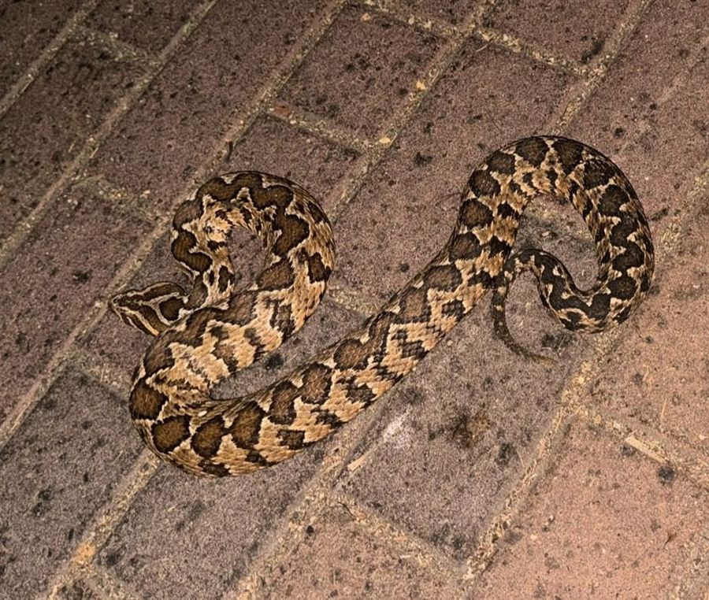
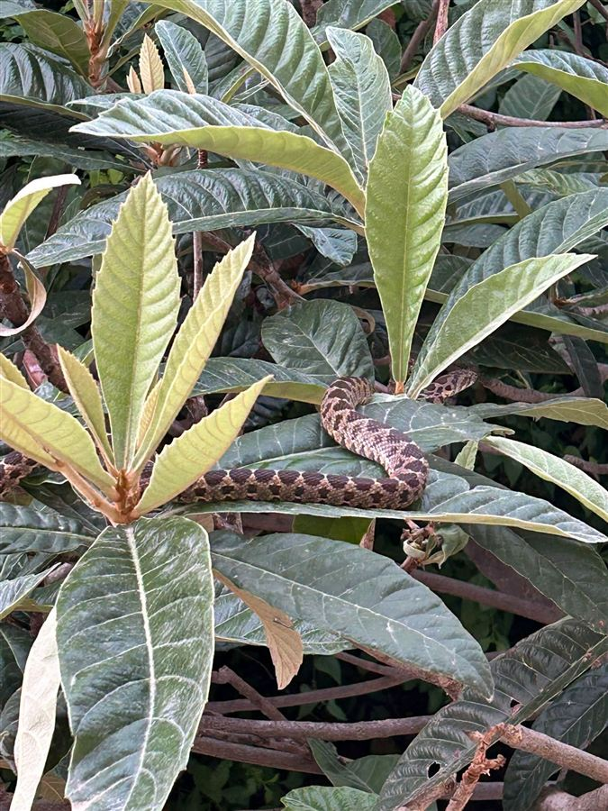

שני נחשים עם דוגמה דומה שמתבלבלים ביניהם בגינות ובשבילים בארץ. הראשון ארסי, השני לא. הנה איך מבדילים, עם תמונות מהשטח.
בטיחות קודם: לא מתקרבים ולא תופסים נחש, גם אם נראה לכם שזה "סתם זעמן". תמונה ממרחק עדיפה על זיהוי מקרוב.
נחש בתוך הבית או בגינה: מזמינים מוציא נחשים מורשה, או פונים לרשות הטבע והגנים (*3639).
נשיכה: מתרחקים, מקבעים את האיבר ומתקשרים למד"א (101). הדף הזה הוא עזר לימודי ולא תחליף לזיהוי של מומחה.
איך מבדילים
צפע ארץ-ישראלי Daboia palaestinae · ארסי

ראש משולש ורחב, מובחן היטב מהצוואר.
גוף עבה וקצר, זנב קצר שנגמר בחדות.
דוגמת זיגזג כהה לאורך הגב, בלוטים שמתחברים זה לזה.
אישון אנכי (כמו של חתול), וקשקשים מחוספסים עם רכס באמצע.
זעמן Coin-marked snake · Hemorrhois nummifer · לא מסוכן לאדם

ראש צר ומוארך, כמעט באותו רוחב של הצוואר.
גוף דק וארוך יותר וזנב ארוך ודק.
כתמים עגולים או מרובעים ("מטבעות") בשורות, לא זיגזג רציף.
אישון עגול, עיניים גדולות, קשקשים חלקים יותר. נוטה לברוח מהר.
בטבלה
צפע
זעמן
ראש
משולש, רחב מהצוואר
מוארך, צר
גוף
עבה וקצר
דק וארוך
זנב
קצר
ארוך ודק
דוגמה
זיגזג רציף לאורך הגב
כתמים עגולים/מרובעים בשורות
אישון
אנכי
עגול
התנהגות
נשאר במקום, מתכווץ ומשמיע שריקה
בורח במהירות
שימו לב: צעירים של שניהם קשים יותר לזיהוי, ותמונה מרחוק או בתאורה גרועה מטעה. מי שלא בטוח, מתייחס לנחש כאל צפע.
צפעים בתנועה
קטע של 4 שניות מהשטח: צפע בין סלעי גדר אבן. שימו לב לדוגמת הזיגזג הרציפה שנראית לאורך הגוף כשהוא מתכווץ ואחר כך נע כלפי מעלה.צפע מטפס על סלע לבן מכוסה עלים. הוא כמעט נעלם בין העלים, ולכן קשה לזהות אותו: בהתחלה הגוף עם הזיגזג נראה בצד שמאל, ובסוף הוא עולה על הסלע בצד ימין.תקריב על הראש. שימו לב לראש שרחב מהצוואר, לסימנים הבהירים שעליו, ולזיגזג הכהה שממשיך מיד אחריו.בסביבה הטבעית: צפע מתקדם בין מחטי אורן ביער. שימו לב איך הראש הכהה עם הפסים הבהירים מתמזג עם הקרקע, ולכן קשה להבחין בו.צפע יוצא מדלי בלילה ונמתח לאורך הקרקע. שימו לב לגוף העבה ולדוגמת הזיגזג הכהה הרציפה לאורכו, ולזנב הקצר יחסית.צפע זוחל על חצץ ועלים יבשים, מלמעלה. הגוף עבה, ודוגמת הזיגזג הכהה נראית לכל אורכו אבל מתמזגת עם הקרקע, ולכן קל לפספס אותו.צפע יוצא מדלי בלילה (קטע של שנייה, בלולאה). רואים את הגוף העבה עם הדוגמה הכהה המשוננת מתפתל לאורך דופן הדלי.צפע מטפס החוצה מקופסה שקופה ונמתח על הקרקע. הגוף עבה ומלא, והדוגמה הכהה המשוננת נראית היטב על רקע האבנים הבהירות.צפע זוחל על חצץ לבן, מלמעלה ובאור יום. הגוף כהה ובולט על הרקע הבהיר, ודוגמת הזיגזג נראית לאורכו. הראש נשאר מחוץ לפריים.צפע בתוך שיח, בחיתוך מקרוב. בהתחלה הראש הכהה נראה זקוף בחלק העליון והגוף עם הדוגמה יורד ממנו, ואחר כך הוא מתכופף הצידה בין העלים. קשה מאוד להבחין בו.
זעמן בתנועה
זעמן זוחל על הקרקע (קטע של שנייה וחצי, בלולאה). שימו לב לגוף הדק והארוך מאוד, לזנב הארוך והדק שנגרר אחריו, ולדוגמה של כתמים בשורות ולא זיגזג עבה.זעמן יוצא מדלי אל קרקע היער, ובתוך כשנייה וחצי הוא נבלע בין העלים היבשים ואי אפשר לראות אותו. כך נעלם נחש מוסווה.זעמן בקופסה שקופה, מלמעלה. שימו לב לשורות של כתמים עגולים כהים על רקע צהבהב, ולגוף הארוך והדק שנפרש כשהוא מרים את הראש. אין כאן זיגזג רציף כמו אצל צפע.זעמן יוצא מהקופסה: הוא עולה על הדופן וזוחל במהירות אל העלים היבשים. שימו לב לגוף הדק והארוך, ולתנועה המהירה שבה הוא נבלע בקרקע.זעמן זוחל מעל מכסה שקוף, מלמעלה. הגוף דק וארוך וצר כמעט כמו חבל, עם דוגמה עדינה של כתמים קטנים, והוא מתפתל בקלות לצדדים.שני זעמנים בקופסה שקופה, מלמעלה. שימו לב לראש הצר והמוארך (משמאל), לגוף הדק והארוך מאוד, ולשורות של כתמים בצבע חום על רקע בהיר.זעמן על בד מצויר, מלמעלה. שימו לב לגוף הדק והארוך מאוד, לראש הצר והמוארך שכמעט לא רחב מהצוואר, ולצבע החום האחיד עם דוגמה עדינה.זעמן בצנצנת שקופה עם בובה לבנה (קטע של שנייה, בלולאה). הגוף דק מאוד וארוך, והוא מתפתל בקלות סביב הבובה.זעמן צעיר ודק על שטיח, מלמעלה. הגוף ארוך וצר כמו חוט, עם שורות של כתמים קטנים לאורכו, והראש הקטן כמעט לא רחב מהצוואר.זעמן צעיר בכוס שקופה, בתקריב על הראש. שימו לב לראש הקטן והצר שלא מובחן בחדות מהצוואר, לעיניים הגדולות והעגולות, ולשורות כתמים קטנים לאורך הגוף הדק.